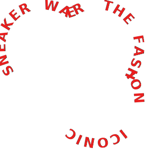

SNEAKER
FOR ALL TIME
The Puma Suede is a classic basketball sneaker first released back in 1968.
The Suede has been
kicking for a long time but remains a powerhouse to this day
thanks to their versatile design and
high-quality construction. Smooth suede,
streetwise swagger, and a sport inspired style,it remains
to this day PUMA's most
iconic sneaker. Decade after decade . 2021 is no different..

01 - 06
Model: Puma Suede
combination classic-Sneakers
Luci Luciano wears
black-white color

